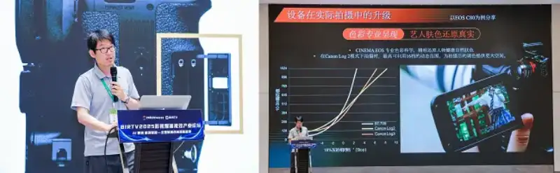
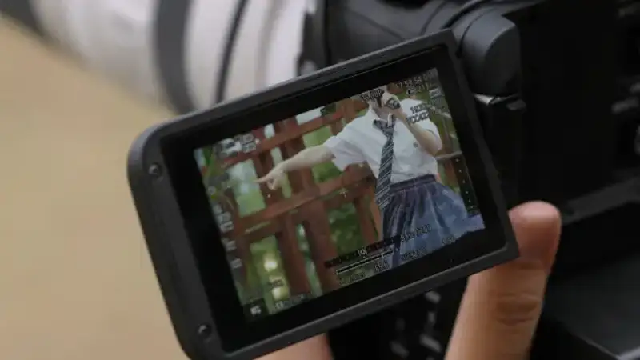
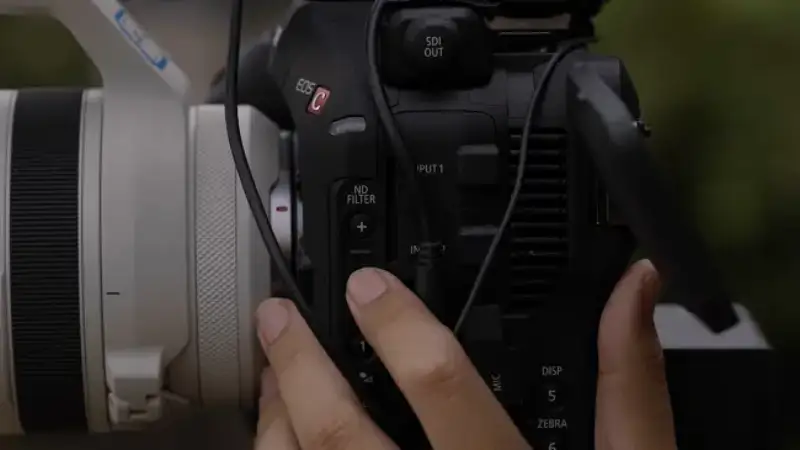
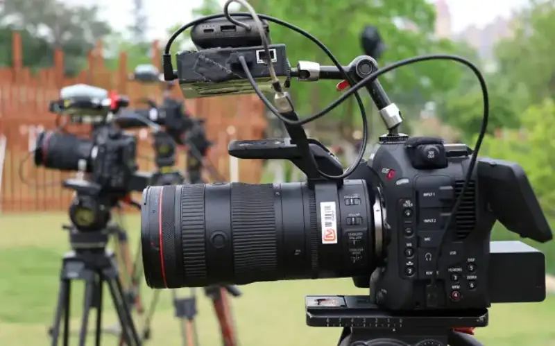

On July 24, 2025, the Film and Media VFX Industry Forum, themed AI, Smart Launch, and Domestic Technology Empowerment, a New Chapter in Converged All-Media Production and Broadcasting, was held in Beijing during BIRTV 2025. The forum was jointly hosted by the Image Professional Committee and the Media Communication Technology and Application Professional Committee of the China Society of Motion Picture and Television Engineers, together with China Radio and Television International, and brought industry experts together to discuss the frontier of visual effects. Yi Chunhua, supervisor of audio and video technology in the program technology department of the Mango TV mid-platform center, attended as a guest and discussed the development of the reality-show production industry with other experts.
The Film and Media VFX Industry Forum in session
Reality shows grow fast. The industry seeks a balance of technology and aesthetics.
In recent years, the Chinese film and TV variety market has grown fast. In 2024 its size passed 60 billion yuan, and it still grows at a solid pace. The larger market and rising audience taste raise the bar for reality-show production. Audiences increasingly want cinema-camera image quality. This includes sharp, high-dynamic-range images, as well as detail and color layers in complex scenes.
Against this background, the industry faces three core challenges. First is the balance of cost and quality. Good image quality needs expensive gear, while a simple setup cannot meet audience expectations for high-spec footage, so cost control and image quality pull against each other. Second is the clash of efficiency and timing. A faster broadcast schedule compresses the production cycle, and shooting must respond quickly to sudden scenes, but traditional gear is complex and inflexible, which limits efficiency. Third is the dilemma of equipment. Business-grade gear cannot reach the required image quality, while professional cinema cameras are cumbersome and hard to carry, so they do not fit the multi-scene, fast-paced needs of reality shows. The core of these challenges is how to balance professional image quality and production efficiency within a controlled cost and a tight schedule, which is exactly the topic Yi Chunhua focused on at the forum.
Yi Chunhua shares the technical challenges in reality-show production
Facing the three core challenges of reality-show production, Yi Chunhua said at the forum: To meet these common industry challenges, we explored some workable directions in practice, and the EOS C80 was one of the choices that showed a good fit in this process. Its value is that it balances the image quality of a professional cinema camera with the operating efficiency of light gear, which helps real shooting combine image quality and ease of use.
Yi Chunhua said that this kind of equipment, under current technology, offers a better way to balance image quality and production efficiency. Through trial and adaptation in real use, teams gradually work out a gear logic that fits reality shows better, which also gives the industry a useful reference for meeting its current challenges.

The EOS C80 helps upgrade Mango TV reality-show shooting
Proven on S+ variety shows: the EOS C80 fits reality-show production needs
In 2025, Canon and Mango TV began a strategic partnership. Across several key Mango TV S+ variety projects, the EOS C80 was widely used as the core camera, and its traits positively affected reality-show production in many ways.
In image quality, the EOS C80 uses a full-frame back-illuminated stacked CMOS sensor and 6K oversampling to output high-resolution images. It captures micro-expressions and scene detail precisely, which sets a strong base for image texture. With 16 stops of dynamic range and three base ISO modes, it handles high-contrast scenes common in reality shows, such as fast cuts from bright outdoors to dim indoors and backlit shooting, keeping detail in both subject and environment. In low light, even at high ISO it stays low-noise, so a complex set always outputs a stable, clean image. This showed fully in Mango TV S+ variety shooting. Facing the contrast jump from bright outdoors to dim indoors, its strong dynamic range keeps the light-to-dark transition smooth and natural, cutting banding from harsh light changes. In outdoor backlight, its dynamic range keeps the subject face properly exposed while fully preserving background detail and color layers, which gives the frame a richer cinema look.
In color, the EOS C80 carries on the CINEMA EOS professional color science. Whether for an artist interaction in direct outdoor sun or an interview under warm indoor light, it restores natural skin tones precisely, so the image feels real. Its Canon Log 2 gamma gives wide room for color grading in post. Especially in the complex light of multi-camera shooting, even when different cameras face backlight or side light, post can unify the color tone easily and avoid a split look, which strongly supports the visual consistency of the whole show.

Precise skin tones and unified multi-camera color: CINEMA EOS color science in use
In shooting efficiency, the EOS C80 smart focus system stands out. Its common RF-mount lenses, with second-generation Dual Pixel CMOS AF, give stable and fast autofocus. The deep-learning EOS iTR AF X does high-performance subject detection, recognizing people and animals from farther away for smarter focus capture, which suits fast-moving, solo-tracking, and complex reality-show scenes. Its built-in ND filter handles sudden light changes with one tap, so shooting does not stop and recording stays continuous. Compared with external ND filters, it cuts cost and management complexity, so a great moment can be both caught and shot well. Its modular design and rich interfaces also adapt fast to stages, interviews, and outdoor scenes, making multi-team work easier and giving the production team stronger control over the whole flow.

The Canon EOS C80 built-in ND filter
One-tap switch handles sudden outdoor light changes, protecting efficiency and image quality
In reliability, the EOS C80 dual-card simultaneous recording, during hours of outdoor competition, effectively prevents losing footage to a single card failure. The built-in fan lets the camera run stably for a long time in hot summer outdoor shooting, cutting the risk of overheating shutdown. Power-loss protection, if the power suddenly fails at a remote location, limits the loss of already-shot footage, so the team can focus on content in a tight schedule with more peace of mind.

The EOS C80 clear interface layout makes fast gear connections easy while shooting
The EOS C80 uses the RF mount and works with a wide range of RF lenses, with many focal lengths and functions, which gives great creative flexibility. On some reality-show sets, operators must shoot from hiding rooms, where a longer telephoto zoom is often needed. Other times they must catch subtle expressions, where a Canon RF portrait lens with a wide aperture and shallow depth of field more easily builds a cinematic mood. Canon large RF lens range offers rich choices for every shooting need.
The wide Canon RF lens range
From wide to telephoto, primes to wide-aperture portrait lenses, meeting the varied needs of reality shows
Also, in the overall benefit of real production, the EOS C80 has a notable advantage: it lowers the overall cost. Cinema cameras usually need a crew and are hard to run solo, but the EOS C80 lets a single shooter be flexible, raise the hit rate, and cut overall cost. Its high-latitude Canon Log 2 also makes post color grading easier and more consistent, saving time on multi-camera grading.
Conclusion:
The Canon and Mango TV partnership is more than swapping the camera on one reality show. By focusing on the pain points of shooting and production, and by widely deploying new professional cameras such as the EOS C80, the two sides have effectively practiced key technical goals in image quality, dynamic range capture, complex-scene adaptability, and color-management efficiency. Facing rising audience taste and higher demands on image quality, color, expression, and artistry, the EOS C80, with its full-frame sensor, wide dynamic range, strong autofocus, clean high-ISO image, and efficient color science, gives production teams a reliable tool that balances quality and efficiency. As Mr. Yi Chunhua said in his talk: In the past we were forced to compromise between image quality and efficiency. Today, the upgrade in technology lets reality shows truly look good and be easy to shoot.
※1. China Research and Intelligence, Market Survey Analysis and Development Trend Forecast Report on the Variety Show Market, 2024-2029.
※2. For clarity, Canon in this article may refer to Canon (China), Canon Inc., or the Canon brand.